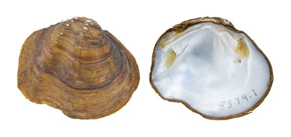

Tritogonia nobilis (Conrad, 1853)
Gulf Mapleleaf

Tritogonia nobilis – East Fork of the Trinity River [Trinity River drainage], length 52.1 mm.
Identification
[Follows Howells et al. 1996; Williams et al. 2008]
Shell structure: moderately thick and somewhat inflated; sulcus present anterior to the posterior ridge, extending from the umbo to the ventral margin.
Shell outline: subquadrate to subtrapezoidal.
Posterior ridge: sharp near the umbo and broadly rounded ventrally.
Shell color: yellowish-brown, tan, brown, reddish-brown or black; surface dull to subglossy.
Rays: none reported.
Shell texture: two-rows of shelf-like pustules mid-disk that are adjacent to the sulcus and run parallel from the umbo to the ventral margin; disk with variable pustules that are usually absent from the sulcus.
Umbo: narrow to moderately broad, elevated above the hinge line; umbo cavity deep.
Umbo sculpture: nodulous ridges that blend into the disk sculpture.
Pseudocardinal teeth: pseudocardinal teeth large, triangular, rough, 2 divergent teeth in the left valve, typically with the posterior tooth being smaller than the anterior, 1 tooth in the right valve.
Lateral teeth: short to moderately long, somewhat thick, straight to slightly curved, 2 in left valve, 1 in right valve.
Interdentum: short, moderately wide.
Nacre: white, iridescent posteriorly.
Other: May be sexually dimorphic such that males are more subquadrate in shape, whereas females are elongate, particularly near the ventral margin just after the posterior ridge.
General range
Range is poorly known as species was previously considered a morphotype of Quadrula quadrula, Mapleleaf. Currently, this species is thought to range from the San Jacinto River east to Alabama and north to northwestern Kentucky, possibly west to Kansas and further north to Minnesota.
Habitat
Streams to rivers, lakes, and reservoirs. In riverine habitats it is often found in nearshore, backwaters, or riffles in still to moderate currents in mud, sand, gravel, or cobble substrates.
Legal listing status
USFWS: None